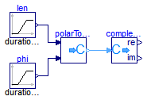

This library demonstrates the usage of Complex blocks.
Extends from Modelica.Icons.ExamplesPackage (Icon for packages containing runnable examples).
| Name | Description |
|---|---|
| Test the conversion blocks |
 Modelica.ComplexBlocks.Examples.TestConversionBlock
Modelica.ComplexBlocks.Examples.TestConversionBlock
A Complex signal is defined by its length and angle, both linearly rising with time. Plotting the imaginary part versus the real part, you will see an Archimedean spiral.
Extends from Modelica.Icons.Example (Icon for runnable examples).
model TestConversionBlock "Test the conversion blocks" extends Modelica.Icons.Example;Modelica.Blocks.Sources.Ramp len(duration=1, offset=1E-6); Modelica.Blocks.Sources.Ramp phi(height=4*Modelica.Constants.pi, duration=1); Modelica.ComplexBlocks.ComplexMath.PolarToComplex polarToComplex; Modelica.ComplexBlocks.ComplexMath.ComplexToReal complexToReal; equationconnect(phi.y, polarToComplex.phi); connect(len.y, polarToComplex.len); connect(polarToComplex.y, complexToReal.u); end TestConversionBlock;